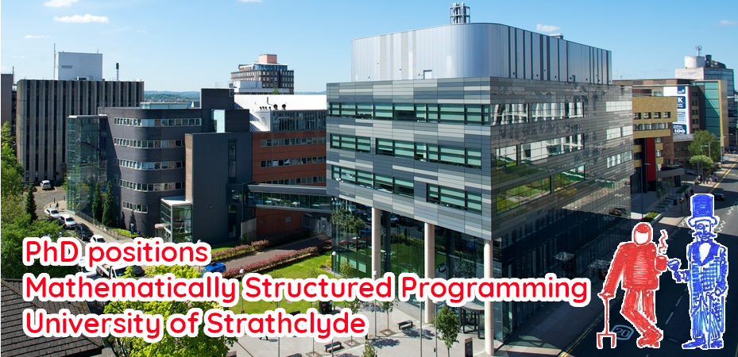

PhD scholarships at the University of Strathclyde 2026
The Department of Computer and Information Sciences at the University of Strathclyde is welcoming applications for PhD studentships. We are expecting that there will be full funding for several UK home students as part of the John Anderson Research Studentship Scheme (JARSS). The studentship covers tuition fees, a stipend for living expenses, and a small travel budget.
The studentship package is predominately aimed for those classed as UK Home Students. For International students, other sources of funding are more than likely to be required to cover the cost of tuition.
Applicants in the area of the Mathematically Structured Programming (MSP) Group are strongly encouraged to apply. Within MSP, we see the mathematical foundations of computation and programming as inextricably linked, and study one so as to develop the other. This reflects the symbiotic relationship between mathematics, logic, and programming — any attempt to sever this connection will diminish each component.
MSP Strathclyde is a fun and exciting place in the UK to do fundamental research, and we all work together to make it a welcoming environment.
Important Dates
If you are interested in applying to join MSP as a JARSS Student, we ask that you contact a potential supervisor as soon as possible, by 22 December, 2025 at the latest.
To help us ensure that you are a suitable candidate please send us a copy of your CV, together with an outline of your research interests.
We will make a decision over your candidacy in the New Year, by Wednesday 7th January, 2026, and then look to put you forward for the scholarship.
Potential Supervisors
Potential supervisors in the group are:
- Guillaume Allais: type-driven programming, correct-by-construction methodology, implementations of type theory, generic programming, proof automation, user experience of interactive compilers.
- Robert Atkey: type theory and computational complexity, resource awareness in logic and programming languages, substructural logics, applications of mathematical structure to programming language design, domain specific languages for specification and verification.
- Vikraman Choudhury: programming languages, type theory, category theory, logic, semantics, constructive mathematics, and formalisation.
- Ross Horne: concurrency and logic, and their applications to analysing threats to security and privacy.
- Clemens Kupke: coalgebraic modelling of systems, logical verification/model-checking, fixpoint logics and their game-theoretic semantics, automata theory and automata learning.
- Conor Mc Bride: dependent type theory, functional programming, effects and handlers, programming language design and metatheory, and the category theoretic underpinnings of all of the above.
- Jan de Muijnck-Hughes: trustworthy systems using type-driven approaches; namely applications of type theory, dependently typed functional programming, and programming (& domain specific) language design and metatheory.
- Fredrik Nordvall Forsberg: dependent type theory, especially homotopy type theory, and its semantics and applications, constructive mathematics, categorical semantics of programming languages.
